MS01
Menna Saleh
فريق AMARNA

اكتشف شوارع التاريخ
رحلة إلى قلب التاريخ المصري القديم
هنا، لكل حجر حكاية ولكل طريق أثر من الماضي.
وسط صحراء المنيا، تقف بقايا مدينة تحمل واحدة من أكثر الحكايات تميزًا في التاريخ المصري القديم. هنا تقع تل العمارنة، المدينة التي بناها الملك إخناتون لتكون عاصمة جديدة ومركزًا لعبادة آتون.
حكاية من قلب مصر
انطلق معنا في رحلة لاكتشاف آثار المدينة، وتأمل تفاصيلها، وتعرّف على حكاية مكان ما زال يحتفظ بأسرار من حياة المصريين القدماء.
تقع تل العمارنة على الضفة الشرقية لنهر النيل بمحافظة المنيا، وهي موقع مدينة «آخت آتون»، التي أسسها الملك إخناتون من الأسرة الثامنة عشرة خلال القرن الرابع عشر قبل الميلاد.
اختار إخناتون هذا الموقع لتأسيس عاصمة جديدة ترتبط بالعبادة التي ركزت على الإله آتون. وشهدت المدينة بناء المعابد والقصور والمناطق السكنية والمقابر، قبل أن يهجرها سكانها بعد وفاة الملك.
ورغم قِصر الفترة التي ظلت فيها العاصمة قائمة، فإن آثارها تقدم نافذة مهمة لفهم الحياة الدينية والسياسية والعمرانية في مصر القديمة.
تعرّف على المعالم
كل زاوية تحمل دليلًا
من ساحات المعابد إلى المقابر الصخرية، تعرّف على الأماكن التي شكّلت ملامح المدينة واكتشف ما تخبرنا به بقاياها.
 لوح مسماري · مراسلات دبلوماسيةFROM THE
لوح مسماري · مراسلات دبلوماسيةFROM THEحين تكلمت المدينة إلى العالم
حكاية أكبر من حدود المدينة.
من أهم الاكتشافات المرتبطة بالمدينة مجموعة الألواح المعروفة باسم «رسائل تل العمارنة»، وهي ألواح مكتوبة بالخط المسماري تضم مراسلات دبلوماسية بين البلاط المصري وحكام وملوك في مناطق مختلفة من الشرق الأدنى القديم.
وتساعد هذه الرسائل الباحثين على فهم العلاقات السياسية والدبلوماسية في تلك الفترة، وتكشف أن آخت آتون ترتبط بحكاية أكبر من حدودها الجغرافية؛ حكاية عن مصر وعلاقاتها بالعالم المحيط بها.
شاهد صورة اللوح ومصدرها
حكاية لم تنتهِ
قد تصمت الحجارة، لكن آثارها تظل شاهدة على من عاشوا هنا، وعلى مدينة صنعت لنفسها مكانًا مختلفًا في التاريخ.
AMARNA — اكتشف شوارع التاريختعرّف على فريق الحملةفريق AMARNA
وراء كل رحلة اكتشاف فريق يجمعه الشغف بالتاريخ، والرغبة في تقديمه لجيل جديد بصورة أقرب وأجمل.
فريق AMARNA
فريق AMARNA
فريق AMARNA
فريق AMARNA
فريق AMARNA
فريق AMARNA
فريق AMARNA
فريق AMARNA
فريق AMARNA
فريق AMARNA
AMARNA — اكتشف شوارع التاريخ